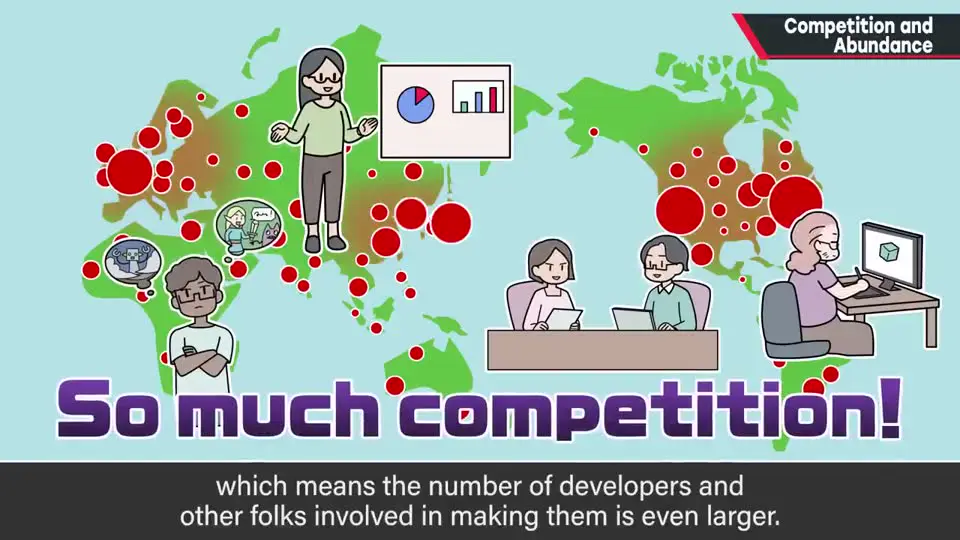
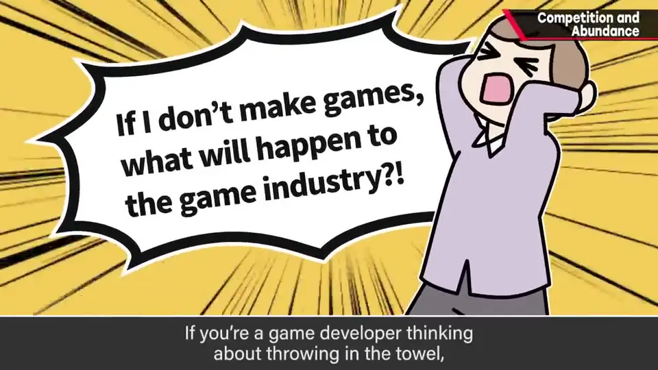
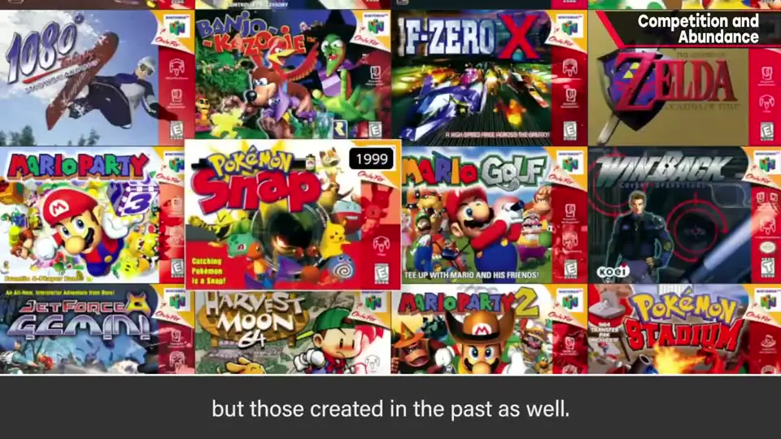
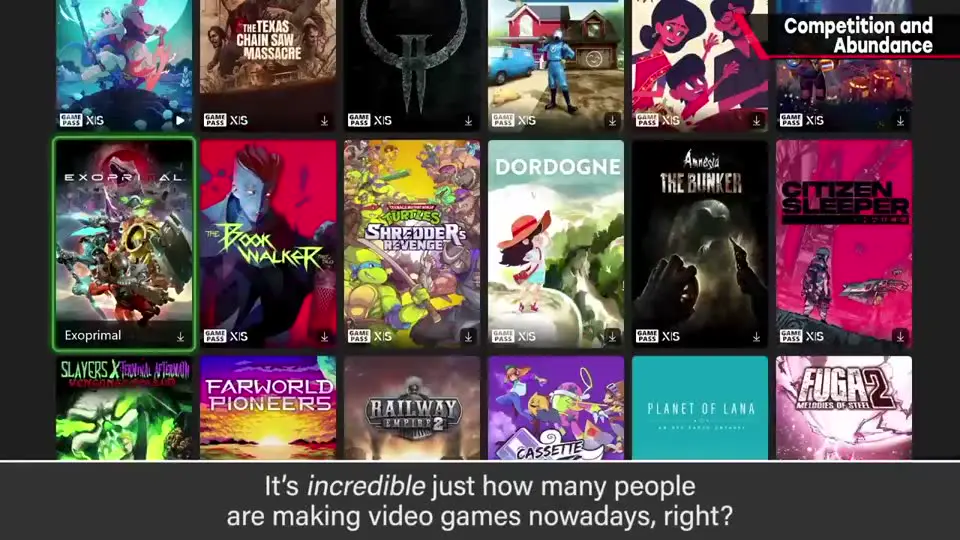
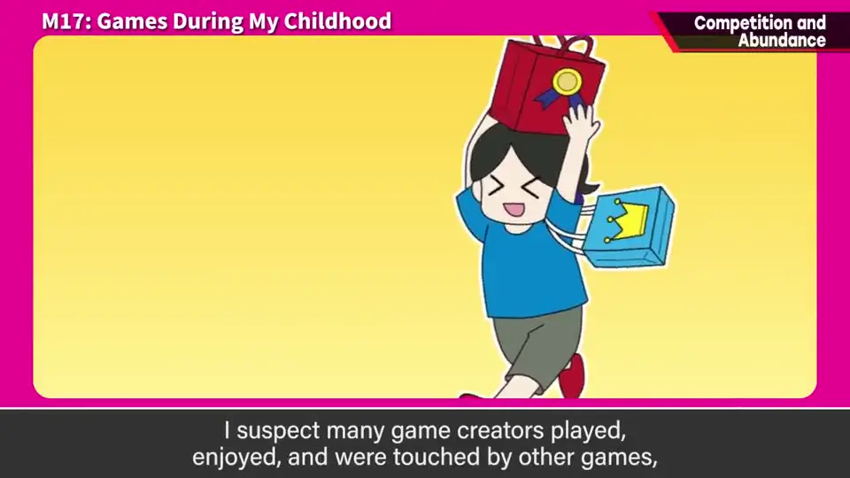

速览
这期适用于很多职业。想做游戏的人非常多，世界上的游戏多到数不清，所以开发者们之间（不论愿不愿意）存在激烈竞争；游戏又很耗时间，于是变成争夺玩家时间。商业发售就必须意识到竞争——而且不只是和新作，还要和过去的作品竞争（订阅制服务里尤其如此）。反过来，站在玩家立场，这是个幸福的时代：可以从海量作品中只挑自己喜欢的玩。樱井说自己深知开发之难，所以感谢众多游戏。有人辛苦做出的东西会让另一个人快乐，在竞争中彼此支撑，才构成这个有趣的世界。
1. 想做游戏的人非常多 0:03
这期适用于各种工作。不知道观众是想做游戏还是已经在做，但事实是：想做游戏的人非常多。
- 世界上诞生的游戏多到数不清，参与开发的人就更多了；
- 不论是工作还是兴趣，世界上做游戏的人比以往都多。


如果你正在做游戏却想放弃，放心地抽身也无妨：少一个人，想做游戏的人也多如山——樱井说他自己也一样。
2. 不论愿不愿意，竞争都在发生 0:53
- 不论你愿不愿意，个人和团队之间都存在激烈竞争。
- 尤其游戏大多需要花大量时间玩，所以是在争夺（玩家的）时间。
- 做自己觉得好玩的游戏很好，但只要商业发售，就必须意识到某种竞争正在发生。
- 而且不只和当下的新作竞争，也和过去的作品竞争——订阅制服务里必然会变成与旧作的较量。

3. 换到玩家视角：真是个好时代 1:33

- 站在玩家/顾客立场，有这么多人做游戏，非常幸福——樱井甚至觉得「真是个好时代」。
- 可以从海量作品中只挑喜欢的玩，有选择的自由；种类多就能任意挑选。
- 能玩到游戏，是因为有人在做。
樱井再次声明这是他个人的想法：他深知做游戏的困难，所以感谢众多游戏。日常使用的东西和服务，花费的劳力都超乎人们想象——他常常想：这样的劳力，用这样的价格就能享受，真的可以吗？
4. 竞争之中，也彼此支撑 2:34
- 做游戏的人，多半是因为玩别的游戏觉得有趣、受到感动，才踏上创作之路。
- 某个人辛苦做出的东西，会让另一个人快乐。
- 有竞争，也有相互支撑，有趣的世界就是这样形成的——值得意识到这一点。
樱井说，投身游戏这一职业后，他更能看清、察觉游戏的乐趣；这个节目也想在这方面帮上一点忙。

flowchart LR
A["有人辛苦做出游戏"] --> B["另一个人玩到并被感动"]
B --> C["其中一些人踏上创作之路"]
C --> A
C -.->|"彼此竞争"| D["商业竞争：
争夺时间 · 也与旧作竞争"] B -.-> E["玩家：从海量作品中自由挑选"]
争夺时间 · 也与旧作竞争"] B -.-> E["玩家：从海量作品中自由挑选"]
自测题
1. 为什么樱井说「如果想放弃做游戏，可以放心地抽身」？
因为想做游戏的人非常多，就算少一个人，想做游戏的人依然多如山（他自己也是如此）。 0:37
2. 商业游戏面临的竞争有什么特点？
游戏大多很耗时间，所以是在争夺玩家的时间；而且不仅与最新作竞争，也与过去的作品竞争——订阅制服务里尤其必然。 0:57
3. 站在玩家的立场，竞争激烈意味着什么？樱井想让大家意识到什么？
意味着可以从海量作品中自由挑选只玩自己喜欢的。他希望大家意识到：有人辛苦做出的东西会让别人快乐，在竞争中也彼此支撑，才构成了有趣的世界。 2:34